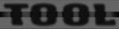
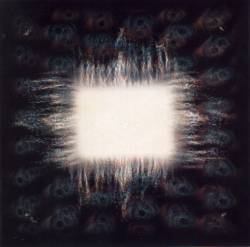

Tal vez piensen ¿como en una pagina de Megadeth y con todos los grandes discos que Megadeth largo en los 90'
(RIP, Cowntodown...) se puede decir que Aenima es El disco de los 90'?. Para mi la respuesta es sencilla, creo que Aenima marca algo nuevo, personal, otro sonido,
otra forma de componer y llevar las melodias.
Aenima es una obra conceptual, las canciones practicamente no tienen estrivillos, y estan practicamente todas ligadas entre si, es una obra oscura, atrapante, con un sonido y
una produccion espectacular. La tematica del disco ronda alrrededor de la degeneración de la raza humana y de como esto llevara a la destruccion del planeta. De echo
el arte del disco nos deja ver como el agua tapara por completo a toda la costa de los EEUU.
Ahora pasemos a la mejor parte, la musica: el disco abre con el archiconosido Stinkfist (para la patetica MTV "Track 1"), un tema espectacular y un video mejor ahun, luego pegado con una entrada sutil y muy climatica viene un tema de casi 10 minutos "Eulogy"
¿pueden creer que la cansion no tiene estribillo? o por ahi si tiene pero no uno veinte... el tema es sencillamente sorprendente nos hace pasar de la ira a la melancolia de la furia a la depresion... algo que se va a repetir a lo largo de todo el disco. Luego empiesa el que creo es el mejor tema "H." una cancion
hermosa, con unos sonidos de guitarra realmente unicos que nos atrapa y nos lleva. Maynard (el cantante) aqui muestra por que es una de las voces mas personales de hoy.
Luego sigue "Forty Six & 2" un tema que empieza con un sonido de bajo alucinante, percusiones de bateria... y despues unas guitarras muy pesadas pero con estilo aqui empieza la parte mas pesada del disco. Luego le sigue "Hooker with a penis" un tema muy rapido y salvaje en el que se cansan de insultar a las banditas de moda y directivos de companias.
Despues de una leve introduccion empieza "Jimmy" un tema mas bien melancolico. Luego le llega el turno a "Pushit" un tema de unos 11 minutos brillantes, realmente brillantes un joya.
Ya llegando al final del album llega el tema que le da el nombre "Aenima" con una letra brillante. Para terminar llega un despliege de maquinas y sonidos con "(-) Ions" y "Thrid Eye".
Como anecdota les cuento que segun las declaraciones de los propios musicos este disoc fue escrito y grabado bajo una droga que es un derivado de la Anestesia... segun ellos eso les producia un estado disosiativo que les hacia creer que el alma se separava de su cuerpo.
Creanme este disco vale la pena... de echo desde el 96' (año en que se edito) estoy esperando que salga otro album que me genere tanto placer escuchar una y otra vez... De las bandas nuevas de los 90' (lease Korn, Marilyn Manson, Deftones, Limp Bizkit y no se cuantas mas) esta es la unica que va a perdurar en el tiempo. Creanme.